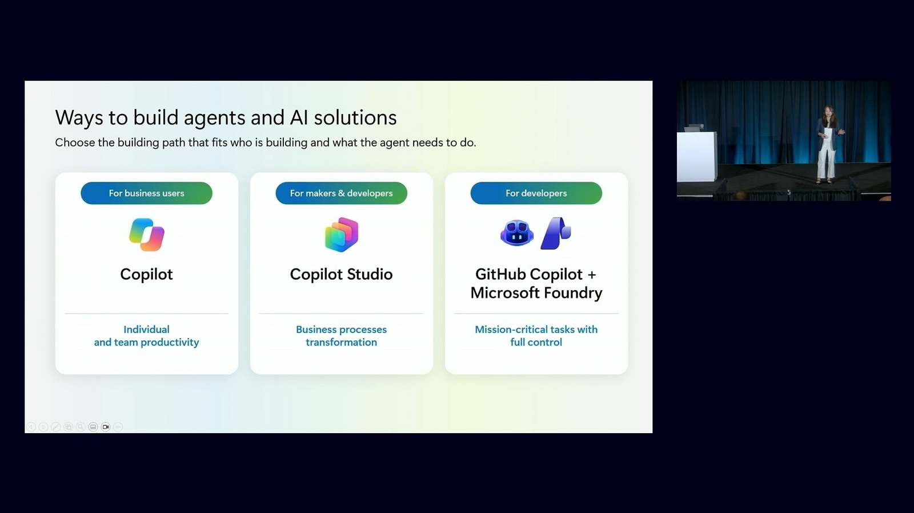
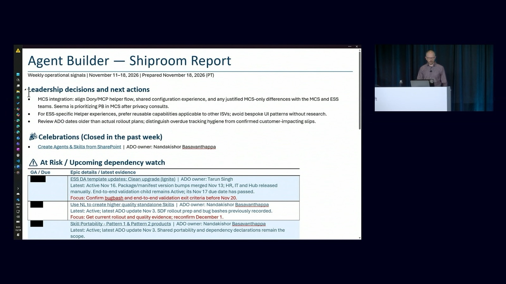
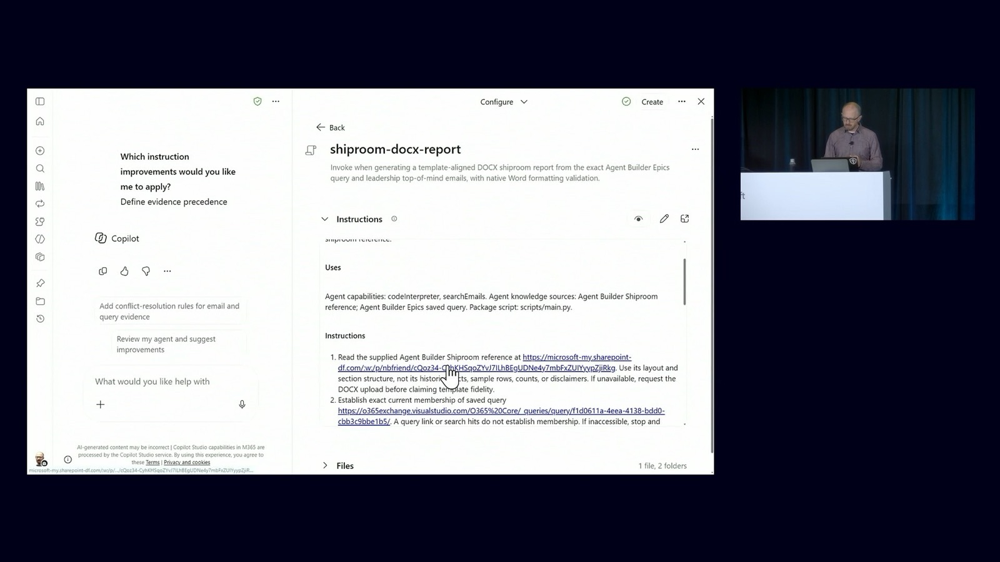
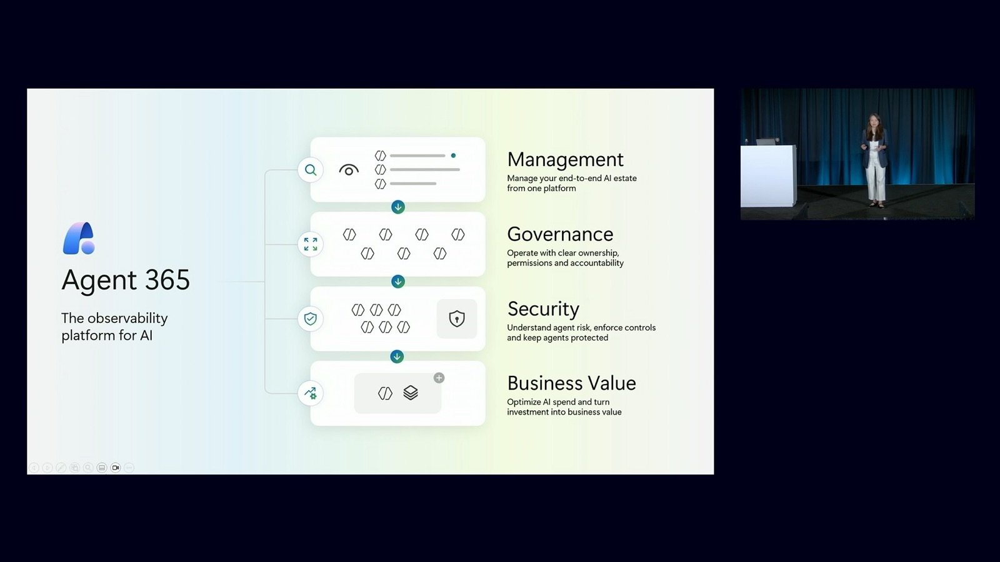

BRK236 现场课件实拍 · 04:55
按构建者角色与任务复杂度匹配三大路径
从个人与团队提效（Copilot）、业务流程重塑（Copilot Studio）到全栈受控关键任务（GitHub + Foundry）逐级递进 [1]。
每周已有数百万名员工直接在 Microsoft Copilot 内构建专属智能体，将原本耗费数小时手工追催的例行工作沉淀为组织共享的数字资产 [1]。在 Ignite 2026 专场 BRK236 中，Copilot 智能体产品市场负责人 Anna Cao 与 Agent Builder 团队负责人（Copilot Chat 与 Researcher 创始产品总监）Ned Friend 系统拆解了面向业务人员、创作者与专业研发的三层构建连续体，现场实机演示了渐进披露 Python 技能、智能体嵌套与 Azure DevOps 跨源接地如何直出原生 Word 周报，并给出了基于四维 Microsoft IQ 与 Agent 365 的规模化治理及三步成本精算底座 [1][2][5]。
01 / Continuum & Theater
通用大模型再强大，也无法预先替企业写好内部特有的业务流程与团队协作惯例 [1]。Anna Cao 在开场直指客户最常追问的选型命题：当开箱即用的聊天助手已经足够聪明，企业究竟在什么节点才需要动手自建智能体 [1]？答案藏在组织的差异化壁垒里——哪怕同在微软市场部，入职 Copilot 团队与入职 Azure 团队的新员工需要研读的站点、规范文档与对接人名单都截然不同 [1]。把沉淀多年的岗位经验与流程标准固化成智能体，才能让团队知识顺着日常办公流自动复用，免去频繁切换系统的损耗 [1][2]。
为了让市场、财务、人力等业务人员与一线软件工程师在同一套企业级护栏下各展所长，微软构建了覆盖全角色的三大互补路径，并将 9 月焕新发布的 Microsoft Copilot 作为触达全员的统一分发载具 [1][3]：
这三条路径并非彼此割裂的孤岛，而是通过统一执行内核与开放协议紧密咬合的有机整体 [1][3][4]：
| 构建路径与目标角色 | 核心产物与模型底座 | 跨栈连接与生产级运行时特性 |
|---|---|---|
| 路径一：Agent Builder（业务人员零代码入门） | 几分钟内在 Copilot Chat 或 SharePoint 直接生成轻量智能体与技能，已有 Copilot 许可即可免费启用 [1][2] | 产物默认封装为插件包（Plugin Package），将技能、工具与远程服务打包复用，支持团队共享或提报管理员上架全组织商店 [1][2] |
| 路径二：Copilot Studio（业务创作者与敏捷研发） | 同一工作台统筹**智能体（推理行动）、工作流（结构化流转）与微应用（人机协同界面）**三大资产；精选 Claude、OpenAI、Grok、Mistral 及微软自研模型，支持 Auto Mode 按任务性价比自动派单 [1][3] | 新增专属智能体账号（Agent Account）与长期记忆（Memory），可在 Teams 与 Outlook 中直接 @提及 派活并越用越准；直连 Work IQ、Foundry IQ 及 1,400+ 连接器，支持发布为远程 MCP 服务或经 A2A 协议联动其他智能体 [1][3] |
| 路径三：GitHub + Foundry（高定制核心系统工程团队） | 支持在 GitHub Copilot 内用自然语言起手提示词智能体，或用 Microsoft Agent Framework 编写自有代码，按需调度 10,000+ 款前沿与开源模型 [1][4] | 由 Foundry Agent Service 提供托管容器与弹性扩缩容：每个会话运行在独立隔离沙盒内，每个智能体分配独立 Microsoft Entra ID，内置端到端决策追踪与自动化评测（Agent Evals）[1][4] |
值得关注的是，Anna 现场确认微软已将今年 8 月随 GitHub 发布的底层编排内核正式更名为 Microsoft Copilot Harness [1][3]。之所以升级命名，是因为这套负责多轮上下文维持、工具调度与推理规划的核心底座，如今已全面贯通 Copilot、Copilot Studio、Foundry 与 GitHub 四大版图，并在客户实测中交出了显著的质量提分表现 [1][3]。
下方交互导览台按时间轴完整还原了 BRK236 全场 45 分钟的四幕核心议程，支持一键唤起微软官方 Medius 点播流核验现场实录 [1]：
点击顶部时间轴标签切换三路径架构、两大高频范式与 Shiproom 检视、渐进披露技能实机调优以及管理中心与 Agent 365 成本治理四大章节。
02 / Adoption Patterns
作为曾先后创立 Copilot Chat（微软内部使用量第一的智能体，早期名为 Microsoft 365 Copilot Business Chat）与 Researcher（使用量第二的深度研究智能体）的产品负责人，Ned Friend 分享了一组极具说服力的采用观察：每周都有数以百万计的用户直接在 Copilot 内动手创建智能体，而这些自发涌现的高活资产高度收敛于两大黄金场景 [1][2]。
第一类是权威指南（Authoritative Guidance）——通用对话虽然能给出漂亮但宽泛的建议，一旦涉及人力资源政策、法务合规或特定项目指标，管理者必须强制要求回答仅源自经过审批的受信任文档（例如微软全公司内部使用率排名第一的员工自助服务智能体 ESS，专门解答人事与 IT 服务台工单）[1][2]。第二类是标准化交付物（Standardized Deliverables）——当团队每周反复撰写战情周报、遵循职级与法务规范的岗位说明书（JD）、新功能规格书（Spec）或严守品牌口径的营销文案时，将其封装成智能体能让全员免写长提示词即可稳定产出同标准成品 [1][2]。
为了展示这两类范式如何改变一线工程管理，Ned 直接打开自己的真实办公环境，演示了他的团队每周开交付评审会（Shiproom）必用的 /shiproom reporter 智能体 [1]：

从个人与团队提效（Copilot）、业务流程重塑（Copilot Studio）到全栈受控关键任务（GitHub + Foundry）逐级递进 [1]。

自动归纳高层决策事项、本周已闭环庆祝项（如 SharePoint 创建智能体）与逾期风险项，甚至主动标注需要重点复核的绿灯任务 [1]。
过去每逢周会前夕，项目骨干往往要耗费数小时四处催问进度、手工拼贴表格；现在只需在聊天框输入斜杠命令 /shiproom reporter 并发送一句“生成本周报告”，智能体便会读取 Azure DevOps 中的史诗（Epics）看板与管理层重点关注邮件，直接生成一份排版严谨的原生 Word 文档，供全组在会议现场实时批注与协同拍板 [1]。更有实战价值的是，报告不仅严格按规则揪出了截止日期已过的验证子单，还自主判断出某些表面显示“进度正常（On Track）”的高优项目——例如前一日刚官宣的 将 Copilot 模型微调（Copilot Tuning）集成进 Agent Builder——值得管理层在会上重点展开复核 [1]。在左侧边栏，Ned 还置顶了遵循微软职级法务口径的招聘 JD 生成器、辅助产品经理查竞品与指标的规格书撰写器（Spec Writer）、新员工入职向导以及全司最火的员工自助智能体；由于所有自建智能体默认封装为插件，点击进入 Plugins 面板即可清晰区分个人创建、同事共享以及带有**管理员审批背书（Admin-Approved）**的官方高信誉资产 [1][2]。
03 / Skills & Grounding
如何零代码亲手复刻一套同等级别的工程周报智能体 [1]？Ned 在后半场从空白画布出发，现场演示了近期密集上线的多项硬核能力——包括渐进披露技能包、自动编写 Python 校验脚本、智能体互相嵌套以及像协作编辑 Office 文档一样共建智能体 [1][2]：
在新建界面粘贴需求并直接挂载一份过往人工编写的旧版周报作为结构样张（系统仅提取版式骨架而不混入旧数据）；生成初稿后无需手工抠字眼改提示词，直接点击 “建议改进（Suggest Improvements）”，系统即刻弹出多选卡片引导补充证据优先级与邮件/工单冲突裁决规则 [1]。
得益于近期上线的技能（Skills）机制，系统自动挂载了名为 shiproom-docx-report 的专属技能；由于技能采用**向模型渐进披露（Progressively Disclosed）**架构，内部不仅容纳了远超常规提示词长度的精细排版指令，甚至还零代码自动编写了技能包内的 main.py 脚本来精确计算工单日期对比与逾期状态 [1][2]。
当读者在周报里看到某项即将上线的新特性时，往往紧接着就要审阅其设计规格书；Ned 直接从插件目录把同事构建的 Agent Builder Spec Reviewer 链接进当前周报智能体，实现“看周报 → 按团队视角审规格书”的一站式串联 [1]。
在知识配置区，除了读取本人与主管的重点邮件，Ned 没有放任智能体大海捞针检索全部聊天记录，而是精准锁定“Shiproom 周期例会系列”的转写纪要以对齐上周决议；同时启用管理员预置的 Exchange Azure DevOps 连接器，关闭无需用到的公网搜索，并现场展示了新上线的 Power BI（底层直连 Microsoft Fabric）、**SharePoint 列表（充当轻量数据库）**与 **Dataverse（承载 Dynamics 数据）**原生接地开关 [1][2]。
在高级设置中默认集成全新的 Outlook Actions：周报生成后，智能体可直接在对话窗内一键起草汇报邮件或会议邀约，但严格遵守绝不自动点击发送的安全红线，始终把最终外发确认权留在用户手中 [1]。
点击创建后智能体默认处于仅自己可见的私有态（但后台已对管理员透明可查）；通过与 Office 文档一致的共享弹窗，Ned 将搭档 Anna 设为共同编辑者（Co-editor），系统自动触发底层参考样张文档的访问授权确认并发送邮件通知；随后可通过内置监测看板追踪总会话数、日活用户（DAU）及各知识源（ADO、邮件、会议纪要）的真实调用命中率，验证高价值后一键提交至全组织应用目录审批 [1][2]。

左侧通过对话式建议补充证据冲突裁决规则，右侧自动挂载 codeInterpreter 与 Python 脚本精确核算 ADO 工单逾期状态 [1]。

围绕资产盘点、权责治理、风险防护与成本优化四大支柱，统一纳管横跨 Copilot、Studio 与 Foundry 的全部智能体 [1][5]。
在切回总结页时，Ned 还剧透了即将落地的三项演进路线图：一是直接在界面内构建完整插件包（Create Full Plugins）；二是在现有定时触发提示词之外，支持基于业务事件触发（Event-Based Prompts）——例如一旦检测到错过了某场会议或收到关键邮件便自动唤醒智能体；三是面向复杂智能体迭代提供版本历史回滚（Version History），随时一键退回上一个稳定可用版本 [1][2]。
04 / Governance & FinOps
当企业内部每周涌现成百上千个自建智能体时，IT 与安全团队怎样做到“既放手让一线创新，又牢牢守住合规与预算底线” [1][5]？Ned 与 Anna 从日常管理后台、底层数据安全栈与财务可预测性三个层面给出了完整闭环 [1][5]：
管理员在 Microsoft 365 管理中心的 Copilot 专区握有三项直接控制权：第一，在丰富的预置库中一键点击 Add Connection 开通受控业务连接器，供 Copilot 与智能体共享；第二，在 All Agents 全量清单中透视全司智能体——遇到可疑资产可当场一键封禁（Block），发现高口碑热门资产则可全员免申领预装推送；第三，关闭“允许向全组织所有人直接共享”开关，确保个人与小团队自由试错的同时，任何面向全公司的推广都必须先过管理员审批门禁 [1][5]。
无论智能体诞生于哪条路径，底层均共享由四部分组成的 Microsoft IQ 上下文层：承载办公协作数据的 Work IQ、直连商业分析与 Power BI 报表的 Fabric IQ、打通云端企业数据的 Foundry IQ 以及获取最新公开资讯的 Web IQ [1][6]。其下直接复用企业已在 Azure 与办公云验证成熟的 Microsoft Entra（身份）、Microsoft Purview（合规标签）与 Microsoft Defender（威胁防护），无需另建孤立安全体系 [1][5]。
针对跨平台智能体资产分散与按量计费导致预算难预测的两大痛点，Agent 365 集中回答四大管理追问：我的 AI 资产有哪些？它们在做什么？带来了什么风险？究竟花了多少钱？[1][5] 在成本管控上，IT 团队可通过三步闭环锁死账单：先用 Copilot Credit Estimator（积分估算器）做事前预算测算，再通过管理中心的成本管理看板（Cost Management Dashboard）跨 Cowork、Copilot Studio 与 Work IQ 接口，按单用户维度或单智能体维度实时对账实际消耗与初始预算 [1][5]。
面对日新月异的技术栈演进，许多客户在推进跨部门规模化采用时渴望获得架构与变革管理陪跑 [1]。微软同步推出了 Frontier Accelerator Program（前沿加速器计划），企业可通过官方网站、微软一线销售代表或生态合作伙伴申请接入，一站式获取专家架构指导、人才赋能与规模化资源投入，把零散的概念验证稳步转化为全员日常生产力 [1]。
05 / References: Official Primary Sources & Engineering Guides
https://medius.microsoft.com/Embed/video-nc/356d05a7-24fc-4876-98ae-edbe2f51a7fb）与英中双语 WebVTT 逐字实录（2026-11-19）